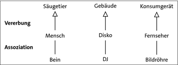
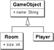

5.8 Vererbung
Schon von Kindheit an lernen wir, Objekte in Beziehung zu setzen. Assoziationen bilden dabei die Hat-Beziehung zwischen Objekten ab: Ein Teddy hat (nach dem Kauf) zwei Arme, der Tisch hat vier Beine, der Wauwau hat ein Fell. Neben der Assoziation von Objekten gibt es eine weitere Form der Beziehung, die Ist-eine-Art-von-Beziehung[141](So etwas gibt es auch in der Linguistik; dort heißt der Oberbegriff eines Begriffs Hyperonym und der Unterbegriff eines Begriffs Hyponym.). Apfel und Birne sind Obstsorten, Lotad, Seedot und Wingull sind verschiedene Pokémons, und »Berg« ist der Sammelbegriff und die Kategorie für K2 und Mount Everest.
Abbildung 5.23: Vererbung und Assoziation
Das Besondere bei der Ist-eine-Art-von-Beziehung ist die Tatsache, dass die Gruppe gewisse Merkmale für alle Elemente der Gruppe vorgibt.[142](Semantische Netzwerke sind in der kognitiven Psychologie ein Erklärungsmodell zur Wissensrepräsentation. Eigenschaften gehören zu Kategorien, die durch Ist-eine-Art-von-Beziehungen hierarchisch verbunden sind. Informationen, die nicht bei einem speziellen Konzept abgespeichert sind, lassen sich von einem übergeordneten Konzept abrufen.) Bei Obst haben wir eine intuitive Vorstellung, und jeder Berg hat eine Höhe und einen Namen sowie eine Reihe von Besteigern.
Programmiersprachen drücken Gruppierung und Hierarchiebildung über die Vererbung aus. Vererbung basiert auf der Vorstellung, dass Eltern ihren Kindern Eigenschaften mitgeben. Vererbung bindet die Klassen sehr dicht aneinander. Mittels dieser engen Verbindung können wir später sehen, dass Klassen in gewisser Weise austauschbar sind. Ein Programm kann ausdrücken: Gib mir irgendein Obststück, und es bekommt dann vielleicht einen Apfel oder eine Birne.
5.8.1 Vererbung in Java
Java ordnet Klassen in hierarchischen Relationen an, in der sie Ist-eine-Art-von-Beziehungen bilden. Eine neu deklarierte Klasse erweitert durch das Schlüsselwort extends eine andere Klasse. Sie wird dann zur Unterklasse (auch Subklasse, Kindklasse oder Erweiterungsklasse genannt). Die Klasse, von der die Unterklasse erbt, heißt Oberklasse (auch Superklasse oder Elternklasse). Durch den Vererbungsmechanismus werden alle sichtbaren Eigenschaften der Oberklasse auf die Unterklasse übertragen. Eine Oberklasse vererbt also Eigenschaften, und die Unterklasse erbt sie.
| Hinweis |
|
In Java können nur Untertypen von Klassen deklariert werden. Einschränkungen von primitiven Typen – etwa im Wertebereich oder in der Anzahl der Nachkommastellen – sind nicht möglich. Die Programmiersprache Ada erlaubt das zum Beispiel, und Untertypen sind beim XML-Schema üblich, wo etwa xs:short oder xs:unsignedByte Untertypen von xs:integer sind. |
5.8.2 Spielobjekte modellieren
Wir wollen nun eine Klassenhierarchie für Objekte in unserem Spiel aufbauen. Bisher haben wir Spieler, Schlüssel und Räume, aber andere Objekte kommen später noch hinzu. Eine Gemeinsamkeit der Objekte ist, dass sie Spielobjekte sind und alle im Spiel einen Namen haben: Der Raum heißt etwa »Knochenbrecherburg«, der Spieler »James Blond« und der Schlüssel »Magic Wand«.
All diese Objekte sind Spielobjekte und durch ihre Eigenschaft, dass sie alle denselben Namen haben, miteinander verwandt. Die Ist-eine-Art-von-Hierarchie muss aber nicht auf einer Ebene aufhören. Wir könnten uns einen privilegierten Spieler als Spezialisierung vom Spieler vorstellen. Der privilegierte Spieler darf zusätzlich Dinge tun, die ein normaler Spieler nicht tun darf. Damit ist ein normaler Spieler eine Art von Spielobjekt, ein privilegierter Spieler ist eine Art von Spieler, und transitiv gilt weiterhin, dass ein privilegierter Spieler eine Art von Spielobjekt ist.
Schreiben wir die Hierarchie für zwei Spielobjekte auf, für den Spieler und den Raum. Der Raum hat zusätzlich eine Größe. Die Basisklasse (Oberklasse) soll GameObject sein:
Listing 5.57: com/tutego/insel/game/vd/GameObject.java, GameObject
public class GameObject
{
public String name;
}
Der Player soll einfach nur das GameObject erweitern und nichts hinzufügen:
Listing 5.58: com/tutego/insel/game/vd/Player.java, Player
public class Player extends GameObject
{
}
Syntaktisch wird die Vererbung durch das Schlüsselwort extends beschrieben. Die Deklaration der Klasse Player trägt den Anhang extends GameObject und erbt somit alle sichtbaren Eigenschaften der Oberklasse, also das Attribut name. Die vererbten Eigenschaften behalten ihre Sichtbarkeit, sodass eine Eigenschaft public weiterhin public bleibt. Private Eigenschaften sind für andere Klassen nicht sichtbar, also auch nicht für die Unterklassen; sie erben somit private Eigenschaften nicht.
Der Raum soll neben dem geerbten Namen noch eine Größe besitzen:
Listing 5.59: com/tutego/insel/game/vd/Room.java, Room
public class Room extends GameObject
{
public int size;
}
Die Klasse Room kann die geerbten Eigenschaften nutzen, also etwa auf die Variable name zurückgreifen. Wenn sich in der Oberklasse der Typ der Variablen oder die Implementierung einer Methode ändert, wird auch die Unterklasse diese Änderung zu spüren bekommen. Daher ist die Kopplung mittels Vererbung sehr eng, denn die Unterklassen sind Änderungen der Oberklassen ausgeliefert, da ja Oberklassen nichts von Unterklassen wissen.
Damit ergibt sich das nachfolgende UML-Diagramm. Die Vererbung ist durch einen Pfeil in Richtung der Oberklasse angegeben.
Abbildung 5.24: Room und Player sind zwei Unterklassen von GameObject
Die Unterklassen Room und Player besitzen alle sichtbaren Eigenschaften der Oberklasse und zusätzlich ihre hinzugefügten:
Listing 5.60: com/tutego/insel/game/vd/Playground.java, Ausschnitt
Room clinic = new Room();
clinic.name = "Clinic"; // Geerbtes Attribut
clinic.size = 120000; // Eigenes Attribut
Player theDoc = new Player();
theDoc.name = "Dr. Schuwibscho"; // Geerbtes Attribut
5.8.3 Die implizite Basisklasse java.lang.Object
Steht keine ausdrückliche extends-Anweisung hinter einem Klassennamen – wie in dem Beispiel GameObject –, erbt die Klasse automatisch von Object, einer impliziten Basisklasse. Steht also keine ausdrückliche Oberklasse, wie bei
class GameObject
so ist das gleichwertig zu:
class GameObject extends Object
Alle Klassen haben somit direkt oder indirekt die Klasse java.lang.Object als Basisklasse und erben so eine Reihe von Methoden, wie toString().
5.8.4 Einfach- und Mehrfachvererbung *
In Java ist auf direktem Weg nur die Einfachvererbung (engl. single inheritance) erlaubt, sodass hinter dem Schlüsselwort extends lediglich eine einzige Klasse steht. Andere objektorientierte Programmiersprachen, wie C++[143](Bjarne Stroustrup hat Mehrfachvererbung erst in C++ 2.0 (1985–1987) eingeführt.), Python, Perl oder Eiffel, erlauben Mehrfachvererbung und können mehrere Klassen zu einer neuen verbinden. Doch warum bietet Java neben anderen Sprachen wie C#, Objective-C, Simula, Ruby oder Delphi keine Mehrfachvererbung auf Klassenebene?
Nehmen wir an, die Klassen O1 und O2 deklarieren beide eine öffentliche Methode f(), und U ist eine Klasse, die von O1 und O2 erbt. Steht in U ein Methodenaufruf f(), ist nicht klar, welche der beiden Methoden gemeint ist. In C++ löst der Scope-Operator (::) das Problem, indem der Entwickler immer angibt, aus welcher Oberklasse die Funktion anzusprechen ist.
Dazu gesellt sich das Diamanten-Problem (auch Rauten-Problem genannt). Zwei Klassen, K1 und K2, erben von einer Oberklasse O eine Eigenschaft x. Eine Unterklasse U erbt von den Klassen K1 und K2. Lässt sich in U auf die Eigenschaft x zugreifen? Eigentlich existiert die Eigenschaft ja nur einmal und dürfte kein Grund zur Sorge sein. Dennoch stellt dieses Szenario ein Problem dar, weil der Compiler »vergessen« hat, dass sich x in den Unterklassen K1 und K2 nicht verändert hat. Mit der Einfachvererbung kommt es erst gar nicht zu diesem Dilemma.
Immer wieder wird diskutiert, ob das Fehlen der Mehrfachvererbung Java einschränkt. Die Antwort ist zu verneinen. Java erlaubt zwar keine multiplen Oberklassen, es erlaubt aber immer noch, mehrere Schnittstellen (Interfaces) zu implementieren und so unterschiedliche Typen anzunehmen.
5.8.5 Die Sichtbarkeit protected
Eine Unterklasse erbt alle sichtbaren Eigenschaften. Dazu gehören alle public-Elemente und, falls sich Unterklasse und Oberklasse im gleichen Paket befinden, auch die paketsichtbaren Eigenschaften. Die Vererbung kann durch private eingeschränkt werden, dann sieht keine andere Klasse die Eigenschaften, weder fremde noch Unterklassen.
Neben diesen drei Sichtbarkeiten kommt eine vierte hinzu: protected. Diese Sichtbarkeit umfasst (seltsamerweise) zwei Eigenschaften:
- protected-Eigenschaften werden an alle Unterklassen vererbt.
- Klassen, die sich im gleichen Paket befinden, können alle protected-Eigenschaften sehen, denn protected ist eine Erweiterung der Paketsichtbarkeit.
Sind also weitere Klassen im gleichen Paket und Eigenschaften protected, ist die Sichtbarkeit für sie public. Für andere Nicht-Unterklassen in anderen Paketen sind die protected-Eigenschaften private. Damit lassen sich die Sichtbarkeiten so ordnen:
public > protected > paketsichtbar > private
5.8.6 Konstruktoren in der Vererbung und super()
Obwohl Konstruktoren Ähnlichkeit mit Methoden haben, etwa in der Eigenschaft, dass sie überladen werden oder Ausnahmen erzeugen können, werden sie im Gegensatz zu Methoden nicht vererbt. Das heißt, eine Unterklasse muss ganz neue Konstruktoren angeben, denn mit den Konstruktoren der Oberklasse kann ein Objekt der Unterklasse nicht erzeugt werden. Ob das nun reine Objektorientierung ist – darüber lässt sich streiten; in der Skriptsprache Python etwa werden auch Konstruktoren vererbt. In Java gehören Konstruktoren eigentlich zum statischen Teil einer Klasse. Die Klasse selbst weiß, wie neue Objekte konstruiert werden. Würden wir Konstruktoren eher als Initialisierungsmethoden ansehen, läge es natürlich näher, sie wie Objektmethoden zu behandeln. Dagegen spricht jedoch, dass eine Unterklasse mehr Eigenschaften hat und der Konstruktor der Oberklasse dann nur einen Teil initialisieren würde.
In Java sammelt eine Unterklasse zwar automatisch alle sichtbaren Eigenschaften der Oberklasse, aber die Initialisierung der einzelnen Eigenschaften pro Hierarchie ist immer noch Aufgabe der jeweiligen Konstruktoren in der Hierarchie. Um diese Initialisierung sicherzustellen, ruft Java im Konstruktor einer jeden Klasse (ausgenommen java.lang.Object) automatisch den Standard-Konstruktor der Oberklasse auf, damit die Oberklasse »ihre« Attribute initialisieren kann. Es ist dabei egal, ob der Konstruktor in der Unterklasse parametrisiert ist oder nicht; jeder Konstruktor der Unterklasse muss einen Konstruktor der Oberklasse aufrufen.
Ein Beispiel mit Konstruktorweiterleitung
Sehen wir uns noch einmal die Konstruktorverkettung an:
class GameObject
{
}
class Player extends GameObject
{
}
Da wir keine expliziten Konstruktoren haben, fügt der Compiler diese ein, und da GameObject von java.lang.Object erbt, sieht die Laufzeitumgebung die Klassen so:
class GameObject
{
GameObject() { }
}
class Player extends GameObject
{
Player() { }
}
Deutschland sucht den super()-Aufruf
Dass automatisch jeder Konstruktor einer Klasse den Standard-Konstruktor der Oberklasse aufruft, lässt sich auch explizit formulieren – das nötige Schlüsselwort ist super und formt den Aufruf super(). Da der Compiler automatisch super() als erste Anweisung in den Konstruktor einfügt, müssen wir das nicht manuell hinschreiben und sollten es uns auch sparen – unsere Fingerkraft ist für andere Dinge wichtig! Ob wir also nun von Hand super() im Konstruktor platzieren oder es vom Compiler einsetzen lassen, für die Laufzeitumgebung ist die vorangehende Schreibweise oder die folgende völlig gleich:
class GameObject extends Object
{
GameObject()
{
super(); // Ruft Standard-Konstruktor von Object auf
}
}
class Player extends GameObject
{
Player()
{
super(); // Ruft Standard-Konstruktor von GameObject auf
}
}
| Hinweis |
|
super() muss immer die erste Anweisung im Konstruktor sein. Beim Aufbau neuer Objekte läuft die Laufzeitumgebung daher als Erstes die Hierarchie nach java.lang.Object ab und beginnt dort von oben nach unten mit der Initialisierung. Kommt der eigene Konstruktor an die Reihe, konnten die Konstruktoren der Oberklasse ihre Werte schon initialisieren. |
super() auch bei parametrisierten Konstruktoren
Nicht nur die Standard-Konstruktoren rufen mit super() den Standard-Konstruktor der Oberklasse auf, sondern auch immer die parametrisierten Konstruktoren. Nehmen wir eine Klasse für Außerirdische mit einem parametrisierten Konstruktor für den Namen des Planeten an:
Listing 5.61: com/tutego/insel/game/vd/Alien.java, Alien
public class Alien extends GameObject
{
public String planet;
public Alien( String planet )
{
this.planet = planet;
}
}
Auch wenn es hier keinen Standard-Konstruktor gibt, sondern nur einen parametrisierten, ruft auch dieser automatisch den Standard-Konstruktor der Basisklasse GameObject auf. Explizit ausgeschrieben heißt das:
public Alien( String planet )
{
super(); // Ruft automatisch den Standard-Konstruktor von GameObject auf
this.planet = planet;
}
Natürlich muss super() wieder als Erstes stehen.
super() mit Argumenten füllen
Mitunter ist es nötig, aus der Unterklasse nicht nur den Standard-Konstruktor anzusteuern, sondern einen anderen (parametrisierten) Konstruktor der Oberklasse anzusprechen. Dazu gibt es das super() mit Argumenten.
Der Aufruf von super() kann parametrisiert erfolgen, sodass nicht der Standard-Konstruktor, sondern ein parametrisierter Konstruktor aufgerufen wird. Gründe dafür könnten sein:
- Ein parametrisierter Konstruktor der Unterklasse leitet die Argumente an die Oberklasse weiter; es soll nicht der Standard-Konstruktor aufgerufen werden, da der Oberklassen-Konstruktor das Attribut annehmen und verarbeiten soll.
- Wenn wir keinen Standard-Konstruktor in der Oberklasse vorfinden, müssen wir in der Unterklasse mittels super(Argument ...) einen speziellen, parametrisierten Konstruktor aufrufen.
Gehen wir Schritt für Schritt eine Vererbungshierarchie durch, um zu verstehen, dass ein super() mit Parameter nötig ist.
Beginnen wir mit einer Klasse Alien, die in einem parametrisierten Konstruktor den Planetennamen erwartet:
Listing 5.62: Alien.java
public class Alien
{
public String planet;
public Alien( String planet ) { this.planet = planet; }
}
Erweitert eine Klasse Grob für eine besondere Art von Außerirdischen die Klasse Alien, kommt es zu einem Compilerfehler:
public class Grob extends Alien { } //Compilerfehler
Der Fehler vom Eclipse-Compiler ist: »Implicit super constructor Alien() is undefined. Must explicitly invoke another constructor.«
Der Grund ist simpel: Grob enthält einen vom Compiler generierten vorgegebenen Konstruktor, der mit super() nach einem Standard-Konstruktor in Alien sucht – den gibt es aber nicht. Wir müssen daher entweder einen Standard-Konstruktor in der Oberklasse anlegen (was bei nicht modifizierbaren Klassen natürlich nicht geht) oder das super() in Grob so einsetzen, dass es mit einem Argument den parametrisierten Konstruktor der Oberklasse aufruft. Das kann so aussehen:
Listing 5.63: Grob.java
public class Grob extends Alien
{
public Grob()
{
super( "Locutus" ); // Alle Grobs leben auf Locutus
}
}
Es spielt dabei keine Rolle, ob Grob einen Standard-Konstruktor oder einen parametrisierten Konstruktor besitzt: In beiden Fällen müssen wir mit super() einen Wert an den Konstruktor der Basisklasse übergeben. Oftmals leiten Unterklassen einfach nur den Konstruktorwert an die Oberklasse weiter:
public class Grob extends Alien
{
public Grob( String planet )
{
super( planet );
}
}
Der this()-und-super()-Konflikt *
this() und super() haben eine Gemeinsamkeit: Beide wollen die erste Anweisung eines Konstruktors sein. Es kommt vor, dass es mit super() einen parametrisierten Aufruf des Konstruktors der Basisklasse gibt, aber gleichzeitig auch ein this() mit Parametern, um in einem zentralen Konstruktor alle Initialisierungen vornehmen zu können. Beides geht aber leider nicht. Die Lösung besteht darin, auf das this() zu verzichten und den gemeinsamen Programmcode in eine private Methode zu setzen. Das kann so aussehen:
Listing 5.64: ColoredLabel.java
import java.awt.Color;
import javax.swing.JLabel;
public class ColoredLabel extends JLabel
{
public ColoredLabel()
{
initialize( Color.BLACK );
}
public ColoredLabel( String label )
{
super( label );
initialize( Color.BLACK );
}
public ColoredLabel( String label, Color color )
{
super( label );
initialize( color );
}
private void initialize( Color color )
{
setForeground( color );
}
}
Die farbige Beschriftung ColoredLabel ist ein spezielles JLabel. Es kann auf drei Arten initialisiert werden, wobei bei allen Herangehensweisen die Aufgabe gleich ist, dass eine Farbe gespeichert werden muss. Das übernimmt die Methode initialize(), die alle Konstruktoren aufrufen. Hier wird dann Beliebiges platziert, was alle Konstruktoren gerne initialisieren wollen.
Zusammenfassung: Konstruktoren und Methoden
Methoden und Konstruktoren haben einige Gemeinsamkeiten in der Signatur, weisen aber auch einige wichtige Unterschiede auf, wie den Rückgabewert oder den Gebrauch von this und super. Tabelle 5.5 fasst die Unterschiede und Gemeinsamkeiten zusammen:[144](Schon seltsam, dass synchronized nicht erlaubt ist, aber ein Konstruktor ist implizit synchronized.)
Ihr Kommentar
Wie hat Ihnen das <openbook> gefallen? Wir freuen uns immer über Ihre freundlichen und kritischen Rückmeldungen.
 Jetzt bestellen
Jetzt bestellen


{kind=link}
{kind=link}